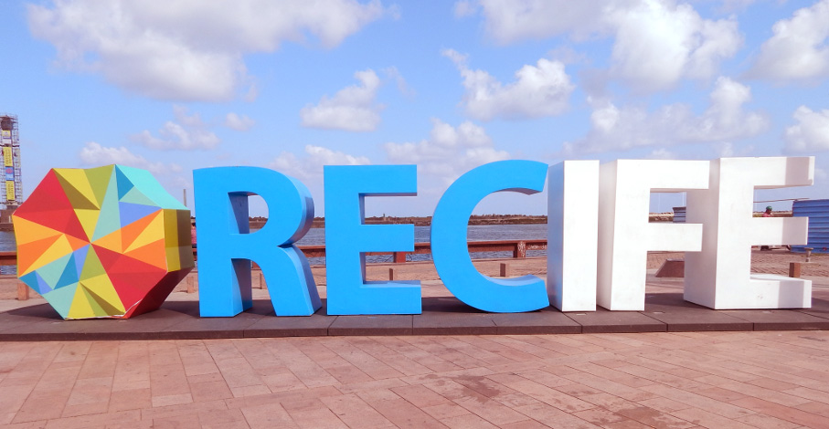

Bem-vindos a Recife
Recife
Uma das mais antigas cidades do Brasil, Recife surgiu por volta de 1537 como Ribeira de Mar dos Arrecifes, uma praia de pescadores e ancoradouro.
Uma das mais antigas cidades do Brasil, Recife surgiu por volta de 1537 como Ribeira de Mar dos Arrecifes, uma praia de pescadores e ancoradouro.